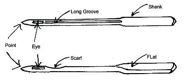

The Humble Needle
by Les Godfrey
Just like the sewing machine, the needle has undergone many years of continuous development. Was the first needle made from a bone or a sharp stick? Whatever the answer the first obvious improvement was a hole cut into one end allowing sinew to be threaded through hides and such. With this simple device we have the two main features of today’s hand sewing needle, possibly one of man’s earliest tools. The needle continued its development along with the invention of the sewing machine. In fact, it is fair to say that the two evolved together. The major breakthrough came when the hole (eye) moved down to the point, an essential characteristic in the achievement of a working machine capable of producing either a lockstitch or a chain stitch.
The needle is an integral part of the sewing process. Obvious you say, but consider this. Not only is the needle there to pass the thread through the fabric, it is also part of the stitch construction mechanism. A needle is made up of several parts each as important as the other. Starting at the top we have the shank, the thick end. Early needles were usually the same thickness from top to bottom and the thicker shank was incorporated to strengthen the needle as speeds increased and heavier fabrics needed to be sewn. Depending on the needle system (type of needle) and there are a couple of thousand, the shank will either have a flat side or be completely round. Most domestic sewing machines now use a needle with a flat-sided shank, it is this feature that positions the needle correctly in the sewing machine ensuring it faces the right way. Next is the long groove, which runs from the shank down to the eye. This groove is at the front of the needle and is opposite the flat on the shank. At the end of the groove is the eye followed by the point. Believe it or not there are different eyes and points. Above the eye at the back of the needle, opposite the groove, is the scarf - a short indent or concaved surface. Some needles have a second short groove or perhaps other components but those listed above are the main features. All of these components have an important function in forming the stitch.
See illustration.

The stitch formation takes place in this order: the needlepoint must first penetrate the fabric allowing the eye to carry the thread through the fabric. The fabric in turn pushes the thread into the long groove. The groove holds the thread tight at the front of the needle as the needle descends. When the needle reaches its lowest position, called bottom dead centre, it starts to rise. This causes the thread to throw a loop at the rear, opposite the groove. This happens because the thread is being held by the groove at the front. This loop forms at the scarf, which is fundamental to the stitch formation allowing the hook to pick up the thread.
Now that you are aware of these design rules what if you unintentionally put the needle into the machine back to front? A direct result would be the loop forming on the wrong side of the needle for the hook to pick up, resulting in mis-stitching, tangling and possible thread breakage. The needle is indeed an integral part of the sewing process and therefore must be fitted correctly.
The needle height is also critical. When the needle is fitted into the needle clamp it must be pushed up all the way until it touches the stop. If on an older machine there is no needle stop the needle height must be set, usually by way of a guide line on the needle bar. The needle bar is raised so that the guide line is level with the top of the machine casting and at this point the needle is set (tightened) so that the eye is level with the needle plate. If a guide line is not visible set the needle height by the shuttle. Check the height of the needle when the shuttle point is directly behind the needle, it should be approximately one eye height above the eye.
Another important element is the correct thread size, in relation to the needle. A thread that is too thick for the needle will not stay in the long groove or cannot enter the groove
in the first place.
A blunt or damaged needlepoint can cause a miss stitch by making a bigger hole in the fabric thus not allowing the fabric to push the thread into the groove etc.. The correct needlepoint must also be selected for the fabric e.g., for knitted fabric (stretch) a stretch needle must be used. A stretch needle does not have a sharp point but rather a rounded point. It is this feature which makes it possible to sew knitted fabrics without damaging the fabric which in turn would cause a miss stitch. The rounded point pushes aside the fibre. Importantly it does not cut through the fibre. If this were to happen and it being a knitted fabric it would cause a run. This run would cause too big a hole to form and this would result in a miss stitch.
On most modern domestic machines the needle is fitted with the flat side facing towards the back of the sewing machine and is threaded from the front. Older machines could have the needle fitted either with the flat to the back, left or right. If there is no flat the long groove is the identifying feature and will determine which way the needle must face. The scarf is not always present on early needles. Remember it is the long groove that holds the thread at the front of the needle allowing the loop to form on the correct side, which by necessity is where the hook or shuttle will, if everything else is right, enter the loop. Determine which way the long groove must face by checking which side of the needle the hook or shuttle will pass. This must be on the opposite side of the long groove. The needle is then threaded from the side with the long groove.
If you are wondering about the terminology ‘Hook’ and ‘Shuttle’, generally a Rotary Hook machine is said to have a Hook and a ‘T.S.’ (Transverse Shuttle). A ‘V.S.’ (Vibrating Shuttle) type machine is said to have a Shuttle. To complicate things a little more the C.B. (central bobbin) type machine, e.g. class 15 Singer, is known as a Shuttle Hook or a C.B. Hook.
There are many reasons for miss stitching but assuming the sewing machine is in perfect mechanical condition it comes down to the correct needle choice and fitting.
Earlier I mentioned different needlepoints and eyes. Well there is another element often overlooked - needle size or thickness. Domestic sewing machine needles are available in sizes 60, 70, 80, 90, 100, 110, and 120. Size 100 being 1mm thick, 120 being 1.2mm, down to 60, being 0.6mm of 1 mm. Therefore, the rule is the larger the number the thicker the needle. Everyone knows or should realise that a needle size of 100 used in a fine fabric such as chiffon will not only damage the fabric, it will more than likely cause miss stitching. Remember the groove in the front of the needle? Well it can only hold the thread tight if the fabric is capable of pushing the thread into it and this can only happen if the hole in the fabric is small enough to grip the needle. If the thread is not held in the groove at the front of the needle when the needle starts to rise the loop will not form, or a small loop may form on both sides of the needle too small for the hook to pick up. This will not happen at every stitch, it depends purely on the hole made by the needle.
The Humble Needle
Les Godfrey
© Les Godfrey 2007. All Rights Reserved